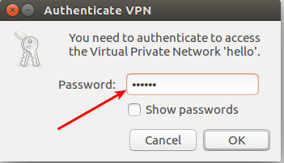

Background
家里电脑升级到Ubuntu 16.04.4了，但是公司办公平时要用VPN，结果16.04添加网络时，不支持使用L2TP，那怎么行。 必须要自己搞起了，以前使用14.04时，直接是用apt-get install的，16.04结果使用apt-get install老是不能正常work。网络找了一圈，各种贴子都试了，还是搞不定。最后没办法了，只有自己编译安装了，结果才知道是有一些坑的，记于此。
Building
这个没有什么巧，直接照着官网building network-manager-l2tp。官网每一步都写的很清晰，命令直接copy过来执行即可，没什么难的，赞官方哈！
Configuration
Building成功安装之后，至此，你添加网络时，已经可以选L2TP了，如下图
接下来，就是正常的配置了，vpn配置里面添加用户名、密码哇什么的。但是就是连不回公司哇，气人得很，试了很多方法。也知道大概是错在哪个位置的，打开debug模式，看log是说vpn加密算法不对路。关键就是这一步难住了，所以才想写这篇blog记录一下的。
Doc
再找找官方文档Known Issues写的很清楚了，里面有个ike-scan工具，可以帮助测试加密算法。才想起来，公司的这套vpn好几年前的，最早的时候是硬件的key，登录都是走windows系统的。越来越清晰了，问题就出在这里。
然后找到新建vpn配置/etc/NetworkManager/system-connections/hello，里面新加
ipsec-ike=
3des-sha1-modp1024
ipsec-esp=3des-sha1
能成功，但是重启后又不行了，奇怪，再查看配置，又被覆盖了，原来是需要在界面里面配置好。这样每次登录后，才不会被覆盖掉，如图
这里有两点注意的地方：
- 勾选
Enable IPsec tunnel L2TP host - 点开Advanced，把上面的两行配置塞进去
Done
至此，基本大功告成了：
- 点击网络小图标，选择
VPN Connections - 输入VPN密码即可（支持硬件动态密码）
恭喜你应该可以登录成功了，如下面这样的界面：）

接着，配置Remmina Remote Desktop Client，就可以登录回公司的Windows电脑啦~
Note
- 新建VPN只需要第一次弄一下，后面每次只需要点vpn用密码登录。
- 在Windows里面连VPN的，记得当时需要填端口，这里好像不需要。
- apt安装的命令如下：
sudo add-apt-repository ppa:nm-l2tp/network-manager-l2tpsudo apt-get update
sudo apt-get install network-manager-l2tp network-manager-l2tp-gnome - 如果安装完l2tp，新建vpn还是找不到l2tp的话，那就试试这个
sudo systemctl restart NetworkManagersudo service network-manager restart- reboot重启咯
- Ubuntu 18.04的话，听说系统又带上了l2tp，那么最主要的就是注意填一下
Phase1 Algorithms :
3des-sha1-modp1024
Phase2 Algorithms :3des-sha1 - Ubuntu 14.04的话，记得当时输入vpn密码之后，有时候能连上，有时候不能，当时也是查了一堆资料，最后就是搞了一个脚本，连不上时，就
sudo ./vpn.sh就好了。现在也记不得为什么了，仅供参考哈。1
2
3
4
5
6
7
8
9
10
# my vpn
for each in /proc/sys/net/ipv4/conf/*
do
echo 0 > $each/accept_redirects
echo 0 > $each/send_redirects
done
/etc/init.d/ipsec restart
/etc/init.d/xl2tpd restart